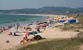
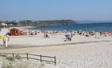
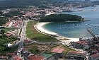
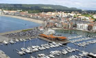
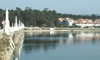
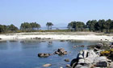
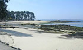
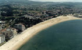
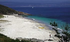

|
 |
 |
 |
| CASA RURAL |  |
LOCALIZACIÓN | |
CONTACTAR | MONASTERIO | GOLF | |
RUTAS | |
PLAYAS | |
FIESTAS | |
|
|
|
La comarca del Salnés es una
comarca costera de la provincia de Pontevedra (Galicia,
España), que se halla entre la Ría de Arosa (la mayor
productora de mejillón y la ría gallega más grande) y la
Ría
de Pontevedra
<Clic
para ver mapa>. La población de la comarca es de 107.618
habitantes (INE 2005) en una extensión de 275,2 km2, que da a
un densidad de 391 hab./km2. Abarca los municipios de: La
Isla de Arosa, Villagarcía de Arosa, Villanueva de Arosa,
Ribadumia, Cambados, Meaño, Meis, Sangenjo y El Grove.
Limita al norte con la provincia de La Coruña, al Este con
la comarca de Caldas, al Sureste con la comarca de
Pontevedra, al Oeste con la Ría de Arosa y al Sur con la
Ría
de Pontevedra. Es una comarca que en verano recibe muchos turistas gracias a sus playas, entre las que destacan las de la Isla de Arosa y Sangenjo, y en menor importancia El Grove, aunque la isla de La Toja y la playa de La Lanzada son dos enclaves que tienen que ser visitados. Tiene cumbres que superan los 600 metros en el monte Castrove y en el monte Xiabre, los 298 metros del Lobeira, y el resto del territorio es el llamado Valle del Salnés. En la Isla de Arosa la máxima altitud es de 68 metros, pero con vistas de toda la ría. El clima en la comarca es continental pero con veranos más parecidos al mediterráneo. En invierno la temperatura media ronda los 10ºC y en verano 21'5ºC con máximas en verano de 40ºC y mínimas en invierno de menos de 0º y que algunos días baja a 7º u 8º solamente. Las nevadas no son muy frecuentes ya que la última que cubrió toda la comarca fue en 1984. Si bien cayó alguna nevada en los montes más altos, como en Xiabre hace pocos años y en el Castrove, tampoco hace mucho. Fuente: Enciclopedia Wikipedia |
|
MUNICIPIO DE SANXENXO El municipio de Sanxenxo cuenta con un sinfín de playas de las más variadas características. Además de las del Silgar en Sanxenxo y Baltar en el casco urbano de Portonovo, otras diez playas y también el puerto deportivo de Sanxenxo consiguieron en 2006 el distintivo de <Bandera Azul> por su limpieza y calidad de aguas, que se complementan con todos los servicios necesarios para el bañista. La relación de banderas azules conseguidas por Sanxenxo en 2006 es la siguiente: Areas Gordas-A lapa , Baltar, Bascua, Canelas, Caneliñas, Foxos, Major, Montalvo, Nuestra Señora de A Lanzada, Paxariñas, Pragueira, Puerto Deportivo Juan Carlos I, Silgar. Playa de A Lanzada La Playa de A Lanzada es una de las más grandes y hermosas de Galicia tanto por la belleza de su entorno como por la calidad de sus aguas. Asimismo, por la dotación de sus servicios permite la práctica de deportes como la vela, el surf o el parapente. Pertenece a los municipio de Sanxenxo y O Grove, y su nombre viene del ave lanzada, cuya estatua podemos ver al lado de la carretera. Esta rodeada por una amplia zona de dunas que la separa de la carretera que bordea la costa. Entre estas dunas un agradable paseo de madera discurre en torno a la playa en prácticamente toda su extensa longitud. La Ría de Pontevedra se abre aquí hacia el Océano Atlántico, por lo que el oleaje es más intenso que en el resto de las playas del municipio, y el viento más incidente, aunque no por ello es una playa menos concurrida, sino todo lo contrario. Playas de Major, Pragueira y Bascuas Después de visitar la playa de A Lanzada y su ermita, asentada entre las dos pequeñas calas de Foxos y Area Gorda, podemos detenernos en el mirador de Punta Faxilda, donde vemos una estupenda panorámica de la Ría de Pontevedra. A continuación se suceden ante nosotros los arenales de Playa Major, Pragueira y Bascuas, esta última es la única donde se practica el naturismo en el municipio. El entorno de la playa de Major es rural, existiendo tan sólo alguna edificación dispersa y zonas verdes. Está rodeada, en toda su longitud, por una zona de dunas, y en el margen derecho en la parte superior tiene un pequeño merendero con maravillosas vistas a la Ría y a la Isla de Ons. En sus inmediaciones hay diversos hoteles, bares restaurantes, un camping y un circuito de karts, todos en torno a la carretera C-550. Playas de Montalbo, Canelas y Baltar Siguiendo la C-550, desde Punta Montalvo al núcleo urbano de Portonovo, tenemos nada más y nada menos que cuatro playas con Bandera Azul. La primera es la Playa de Montalvo, arenal amplio dotado de todos los servicios y con un área recreativa perfecta para una tranquila comida campestre. A continuación, la pequeña playa de Paxariñas cuenta con un camping y varios hoteles, siendo muy recomendable por su tranquilidad. Pasamos la Punta Cabicastro, con otro excelente mirador, para entrar en Portonovo. Las playas de Canelas y Caneliñas, separadas por la Punta Seame y muy concurridas. En sus cercanías, gran cantidad de establecimientos hoteleros. Después del Mirador de Portonovo y el Monumento a la Peixeira, llegamos al núcleo urbano de Portonovo, con la Playa de Baltar. Un agradable y concurrido paseo de madera discurre paralelo a la playa en toda su longitud, en la amplia zona dunar que separa la playa de la carretera C-550. Paralelo a la carretera discurre otro paseo que une las villas de Portonovo y Sanxenxo, ambas separadas por Punta Vicaño. Después del puerto deportivo de Sanxenxo, pequeñas calas se suceden con nombres característicos: Os Barcos, Panadeira, Lavapanos, Carabuxeira. Playa de Silgar Playa de entorno urbano localizada en el corazón de la Villa de Sanxenxo. Con 750 metros de longitud, está bordeada por un paseo marítimo de gran animación en la temporada estival y con especial belleza nocturna debido a su iluminación y su conformación de pequeña bahía. En su margen derecho se encuentra el "Corveiro", nombre que recibe la roca en la cual está la famosa escultura de la Madama. Las buenísimas condiciones de la playa hace que fuera la primera playa del municipio en conseguir la Bandera Azul allá por 1999. Su orientación con respecto al poniente y su situación abrigada la convierten en una de las playas más soleadas y cálidas de la zona. Frecuentemente se pueden ver veleros partiendo o arrivando al Puerto Náutico de Sanxenxo. MUNICIPIO DE O GROVE El municipio de O Grove cuenta con un gran número de playas de muy variadas características; tres de ellas recibieron la Bandera Azul en 2006: A Lanzada, Area da Cruz, Peralta (Confín) y Rareiros (Paxareiro). En la Isla de la Toja, la playa se encuentra al final del puente que la une a la península. Desde el final del pueblo hasta la Punta del Castillo se situan las pequeñas calas de Rons y Cons Roiboo y dos de las mejores playas del municipio: As Pipas y Mexilloeira. La costa de San Vicente do Mar es una sucesión interminable de pequeñas y hermosas calas para los que prefieran la tranquilidad. En la zona sur del municipio, y cercanas de la urbanización de Pedras Negras, nos encontramos con las playas de Area da Cruz y Paxareiras antes de llegar a la Playa de A Lanzada. ILLA DE AROUSA La Isla de Arosa es un privilegiado ejemplo de la belleza que caracteriza a las costas de las Rías Baixas. Esta hermosísima isla se localiza frente a la margen derecha de la Ría de Arosa, comunicándose con Vilanova por un puente construido en el año 1985, que mide 2 km. Su morfología nos recuerda a un siete, indicando quizás con esto la extensión que ocupa, que son 7 km2, en los que se asienta una población de casi 5.000 habitantes. Tiene 36 km. de costa y 11 km. de playa. La sinuosa costa de la isla ofrece al visitante un sinfín de maravillosas playas de arena blanca y aguas transparentes; desde los grandes arenales como Camaxe, Camaxiñas o Area da Secada, hasta pequeñas playas en Punta Carreirón, rodeadas de dunas y pinares donde el bañista puede disfrutar de la paz y la naturaleza, lejos de ruidos y aglomeraciones. Merece una mención especial por su hermosura el islote Xiadoiro Areoso. Los puntos de mayor interés son: el entorno del faro, el islote Areoso y el Parque Natural do Carreirón. VILANOVA DE AROUSA El municipio de Vilanova de Arosa tiene un litoral de más de 20 km en el que se suceden extensas playas y calas más solitarias. Su situación en el interior de la Ría de Arosa hace que sus limpias aguas sean tranquilas y aptas para los más pequeños. La primera playa que nos encontramos en el camino desde Villagarcía a Vilanova es la playa de As Sinas, unida a la villa por un extenso paseo, en el que se suceden los arenales de Mosqueiro y Bornal. Dentro del casco urbano de Vilanova, tenemos las pequeñas calas de Fuxiño do Porco y As Brañas. Pasando la villa y tomando la carretera del Terrón, se suceden las playas de Con da Mina, O Terrón y O Pasaxe antes de llegar al puente que une Vilanova con la Isla de Arosa. Después de pasar el puente encontramos las solitarias calas de Cabalgada, Castelete y As Patiñas. VILAGARCÍA DE AROUSA Villagarcía, situada al fondo de la Ría de Arosa, puede presumir de tener unas playas de aguas tranquilas y no demasiado frías, para lo que es habitual en las rías gallegas. El principal arenal del municipio, distinguido año tras año con la Bandera Azul de la UE, es el de A Concha-Compostela. Fue la gran afluencia de santiagueses la que bautizó al arenal con el nombre de Compostela. La playa está situada entre los cascos urbanos de Villagarcía y Carril. Su longitud es de casi dos kilómetros. La zona más próxima al casco urbano de Villagarcía, en la que se encuentra un pinar, un mirador y un pequeño jardín, se conoce con el nombre de A Concha por la forma que adapta la línea de playa, mientras que su parte central y norte, en la que se encuentra el balneario y un jardín, recibe el nombre de A Compostela. La playa de A Concha-Compostela es un arenal eminentemente urbano, en el que se suelen celebrar durante el verano actividades de animación sociocultural. Cuenta con dos zonas de juegos infantiles, una de ellas en el propio arenal y la otra en el jardín de A Compostela. Dispone de plazas de estacionamiento en la avenida Rosalía de Castro, que discurre paralela a la playa, y delante del antiguo apeadero de Renfe en Carril. También cuenta con numerosos bares y restaurantes en sus inmediaciones. ILLA DE ONS La Isla de Ons se encuentra en el noroeste de España, en la Comunidad Autónoma de Galicia, concretamente en la Provincia de Pontevedra y en el centro de las Rías Bajas, protegiendo la entrada de la Ría de Pontevedra. Tiene un longitud máxima de 6 km de norte a sur y una anchura máxima de 1,5 km. Su superficie es de 427,5 Hectáreas. La altura máxima se encuentra a 128 metros donde está situado el faro. Sin lugar a dudas, un lugar paradisíaco para pasear y para disfrutar de la tranquilidad de sus playas. <Clic para más información> Fuentes:
|
| Casa rural | Localización | Contactar | Monasterio | Club de golf | Rutas | Playas | Fiestas |